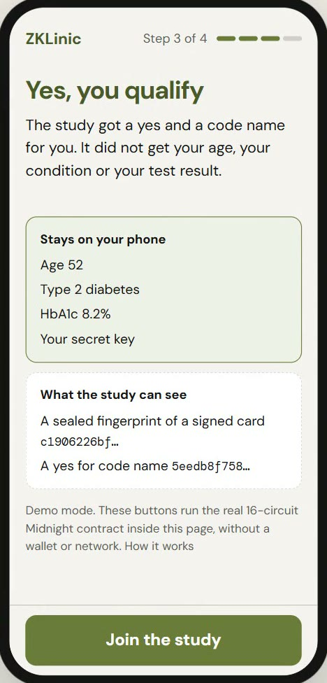
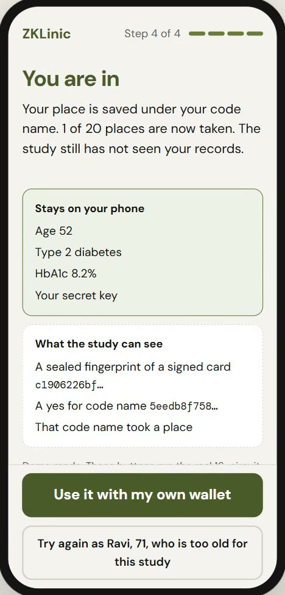
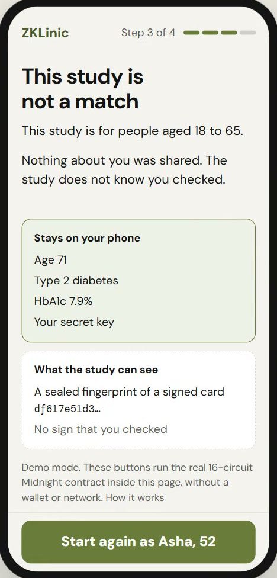
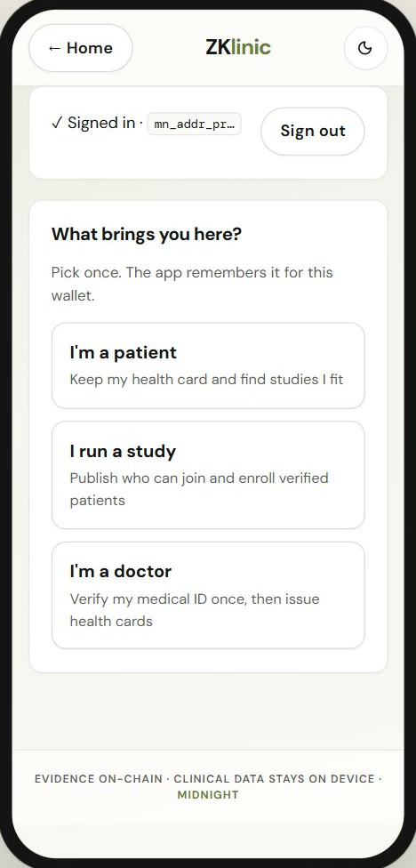
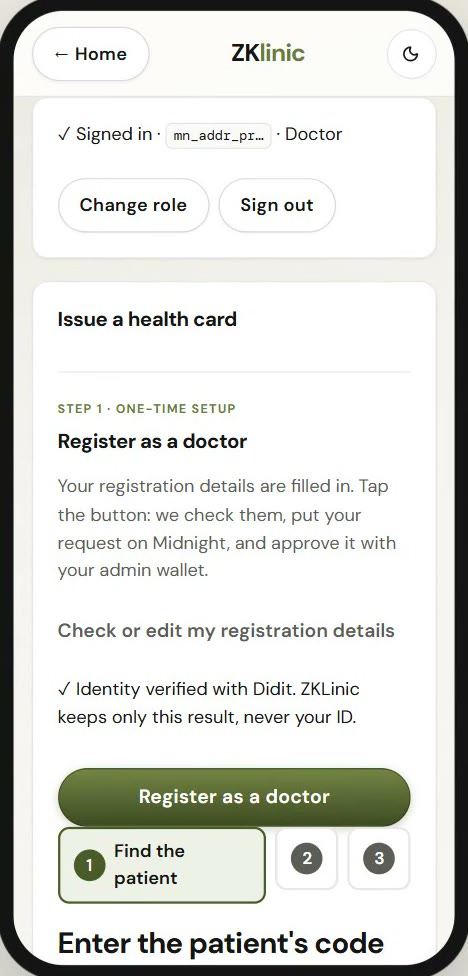

Built on Midnight. Wave 3 submission.
Join a clinical trial without handing over your medical records.

The problem
About 85% of trials miss their recruitment timelines. The patients exist, but to be considered they hand their whole medical record to a sponsor they have never met.
So most never apply, and sponsors spend months screening people who don't qualify.
Patients need to prove they fit without becoming a data source.
How it works
Checks the patient and signs a health card: age, diagnoses, lab results. Only a hash of the card goes on-chain.
Card hash publicKeeps the card on their phone. The phone proves the study's rules are met in a zero-knowledge proof.
Age, diagnosis, labs stay privatePublishes who can join. Enrolls verified code names, never names or records.
Rules publicIdentity privateThe patient's view


On Midnight
issueCredentialCommitment | A registered doctor adds the card's commitment to a Merkle tree. |
publishTrialCriteria | The study's rules go on-chain and can't be changed afterwards. |
proveEligibility | Four private witnesses, membership in the commitment tree, and a per-trial nullifier so one card counts once. |
recordEnrollment | Only a verified proof can take a place in the study. |
Built for real people, phone first


What changed in Wave 3
Engineering and quality
Plus browser tests on desktop and phone sizes, and CI that compiles the contract on every push.
Preprod contract 76099957e2d62de2587a4c0c7b6797715be6c5f9d03590a5443e39f27e2dfb55
Business
Next
Try it: zklinic.vercel.app/demo
Code: github.com/fahmmin/zklinic-midnight